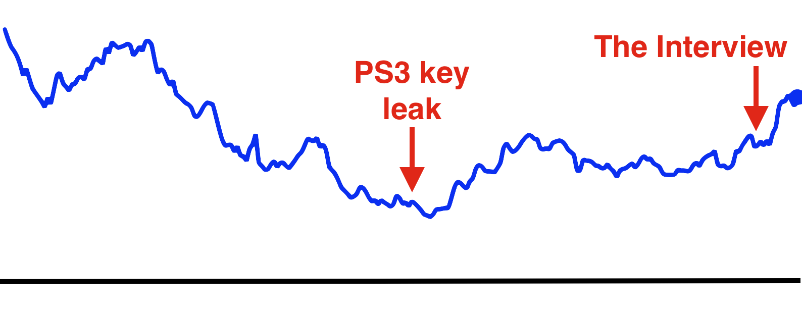
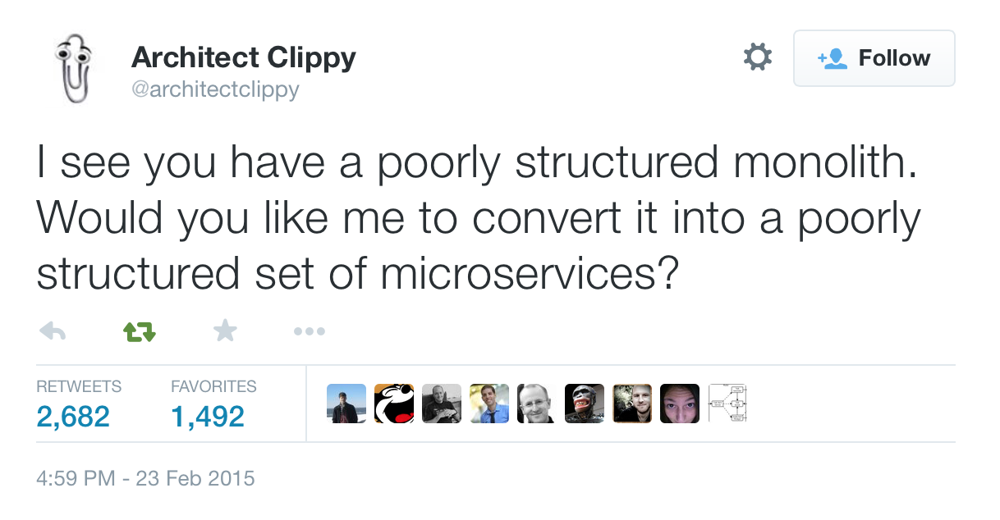
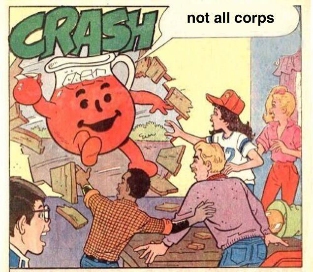

Building secure software
@lvh
_@lvh.io
Slides
www.lvh.io/BuildingSecureSoftware/
Introduction
Who am I?

Rackspace

In this talk
Not in this talk
- Common security bugs
- Importance of software updates
- What software to use
The problem
All software has bugs
Some are security bugs
Security bugs are bad
Bad news
No wonder it's broken!
- Tools don't work
- Corps mess it up
.edudoesn't educate
Our tools don't work
How do I write the unit test for "security"?
How do we learn software?
We read the docs!
Security docs?
Missing or terrible
Google & StackOverflow
Lots of misinformation
How else do we learn?
(Especially without docs)
We play with it!
- Install it
- Play with it
- Learn something
- Repeat
Security doesn't work that way
- Install it
- Play with it
- Get it wrong
- Repeat anyway
It almost works that way
- Install software
- Try to break it
- Learn something
- Repeat
We're not trained to think that way
- Make it work, not make it fail
- Often (not always) pretty hard
- Issues usually not obvious
We're not paid to think that way
Who regularly gets to do e.g. pentesting?
Most corps mess it up
- New features > fixing security bugs
- People make mistakes
- Good crypto looks like bad crypto
Time bombs
Maybe they'll never go off! Right?!
Doesn't matter
Little/no effect on bottom line
Sony

Rational actors
Abstinence-only education
What do we teach?
Liskov substitution
(∀ x: T(x) → p(x))
→ (∀ S: (T ⊃ S) → (∀ y: S(y) → p(y)))
What don't we teach?
Least authority
Don't give stuff more power than it needs.
(extensive handwaving)
POLA > LSP
Security is not a priority
(Not in business, not in education…)
⊢
Don't be a jerk to your coworkers about infosec
Don't be a jerk about infosec
Don't be a jerk
Don't
Good news
Problems are not set in stone
Education can be fixed
- Public education through Open Source
- Shameless Crypto 101 plug
- Awesome projects like
cryptography
- Maybe someone will fix .edu?
Some tools do work
(mostly by accident)
Channeling Glyph
programming n: local understanding
Applied to systems
small composed pieces > large monoliths
No implications
- Microservices ↛ security bliss
- Monolithic services ↛ security issues
- Pieces can be functions, classes…
- (and services too)
Microservices
- Yes, when split by authority
- Arbitrary splits can make it worse
- Larger attack surface, because:
- More communication
- More programming environments
- …
Poorly structured programs

Code review
- Best thing after a bug tracker
- Disseminate experience
- Cultivate culture of quality
- In-house and third-party
Automated testing
A lot can be automated, e.g.,
- Behavior against bogus certificates
- Unit tests that check middleware
- …
Not all corps

Some employers are great
- Lots of great places working for the public good
- Does not fix our systemic industry problems?
Adversarial approach
- Third party security audits
- Internal red/blue teams
Meta-conversation
Channeling Zooko
Security is…
- not perfect vs imperfect
- not better vs worse
- this surface vs that surface
Some vocabulary
Attack surface
How can adversaries attack the system?
Attack model
How will adversaries attack the system?
Useful security proposals
- Description
- Attack model (+ motivation)
- Difference in attack surface
- Difference in user experience
Description
- What are you actually going to do?
- Devil's in the details
Attack models
- What are you protecting against?
- How is this addressed now?
- How will it be addressed afterwards?
Attack surface
- Not always a strict improvement
- E.g., install some new monitoring software
- What about bugs in that software?
User experience
- One of the most important aspects
- Usually completely forgotten about
- I'm looking at you, PGP
Example: smartphones
- Contain everything
- Need to be protected
Lock screen!
Clearly better than no lock screen
Options on my iPhone 6
- Passcode
- Fingerprint
Options on some other phones
- Patterns (~ passcode)
- Face recognition (~ fingerprint)
Biometrics
Hollywood-level technology!
Biometrics
- Key rotation?
- Separate capabilities?
- On everything you touch!
- Faking fingers is tricky
Secrets
- People pick poor secrets
- Shoulder surfing
Which one do you pick?
Which one do you pick?
- Either is better than neither
- Each has their flaws
Threat models!
Fifth Amendment
- (The American one)
- (I am aware we're in Canada)
Disclaimer
- Not legal advice (IANAL)
- Not opsec advice
Fifth Amendment
[…] nor shall be compelled in any criminal case to be a witness against himself, […]
Protected from self-incrimination
Can't force the secret out of you
Fingerprints aren't secret
- Police can and does take your fingerprint
- Can force you to unlock your phone
Which one is more secure?
It depends on your threat model!
- Random people? Probably touch id
- Law enforcement? Definitely passcode
Again, not legal or opsec advice
- I know what happens when you reset your phone
- I am trying to illustrate threat models
Wrap-up
Let's do this
- Most of us are under attack all the time
- We have a long way to go
- We can meaningfully impact security
- Don't need to be an expert